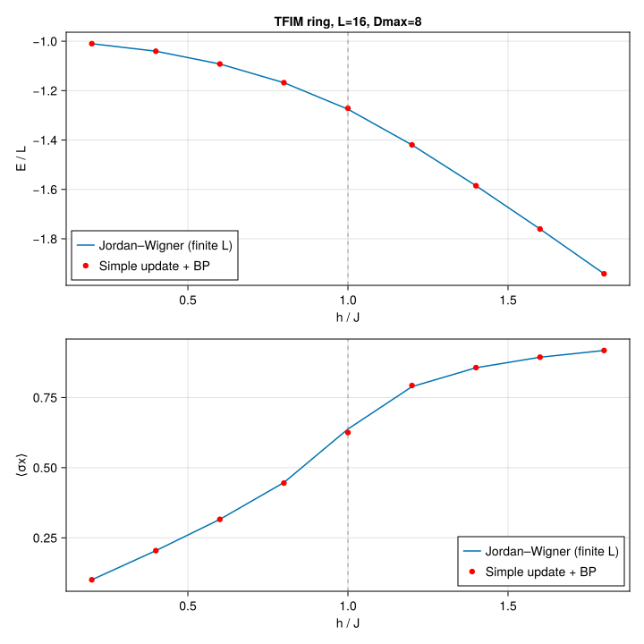

Transverse-field Ising model on a ring
Imaginary-time evolution of the 1D transverse-field Ising model,
\[H = -J \sum_{\langle ij \rangle} \sigma^z_i \sigma^z_j - h \sum_i \sigma^x_i,\]
on a ring (cycle graph, PBC), via simple update on top of belief-propagation messages. We sweep $h$, compute the ground-state energy per site $E/L$ and the transverse magnetization $\langle \sigma^x \rangle$, and compare against the exact Jordan–Wigner solution at the same finite $L$.
This example can be run from the command line with:
julia --project=examples examples/tfim_chain_ring/main.jlusing Canopy: randn_state, BPMessages, belief_propagation,
UndirectedEdge, apply!, expect,
Strang, trotterize, edge_coloring
using TensorKit
using TensorKitTensors.SpinOperators: σˣ, σᶻ
using MatrixAlgebraKit: truncrank, trunctol
using Graphs: cycle_graph, edges, src, dst, nv
using Random
using Statistics: mean
using Printf
using CairoMakieJordan–Wigner reference
In the finite-$L$, even-parity (ground-state) sector of the TFIM ring at $J = 1$, the antiperiodic momenta are $k_n = (2n-1)\pi/L$ with single-particle dispersion $\varepsilon(k) = 2\sqrt{J^2 + h^2 - 2 J h \cos k}$ and ground-state energy $E_0 = -\tfrac{1}{2} \sum_k \varepsilon(k)$.
_ε(J, h, k) = sqrt(J^2 + h^2 - 2J*h*cos(k))
function jw_energy_per_site(L::Int, h::Real; J::Real=1.0)
return -(1/L) * sum(_ε(J, h, (2n-1)*π/L) for n in 1:L)
end
function jw_mx_per_site(L::Int, h::Real; J::Real=1.0)
return (1/L) * sum((h - J*cos((2n-1)*π/L)) / _ε(J, h, (2n-1)*π/L) for n in 1:L)
endjw_mx_per_site (generic function with 1 method)Random ring state
function ring_state(L::Int, Dmax::Int; T::Type = ComplexF64)
g = cycle_graph(L)
@assert nv(g) == L
ekeys = [UndirectedEdge(src(e), dst(e)) for e in edges(g)]
return randn_state(T, ekeys, ComplexSpace(2), ComplexSpace(Dmax)), ekeys
endring_state (generic function with 1 method)TFIM bond operators
We distribute the bond Hamiltonian across edges as
\[h_e = -J\, \sigma^z \otimes \sigma^z - \frac{h}{\deg(u)}\, \sigma^x \otimes I - \frac{h}{\deg(v)}\, I \otimes \sigma^x,\]
so that $\sum_e h_e = H$ exactly. For a ring every vertex has degree 2.
function tfim_bond_hamiltonian(J::Real, h::Real, deg_u::Int, deg_v::Int; T::Type=ComplexF64)
sx, sz = σˣ(T), σᶻ(T)
iI = id(ComplexSpace(2))
return -J*(sz ⊗ sz) - (h/deg_u)*(sx ⊗ iI) - (h/deg_v)*(iI ⊗ sx)
endtfim_bond_hamiltonian (generic function with 1 method)Running a single (L, h, Dmax) point
Each point is evolved with a Strang-split Trotter circuit over a decreasing-dτ schedule, re-converging the BP messages after every sweep.
const SCHEDULE = ((0.1, 60), (0.01, 60), (0.001, 40))
function run_one(L::Int, h::Real, Dmax::Int; J::Real=1.0, seed::UInt=hash((L, h, Dmax)))
Random.seed!(seed)
T = ComplexF64
state, ekeys = ring_state(L, Dmax; T)
msgs = BPMessages(state)
msgs = belief_propagation(msgs, state; maxiter=300)
h_e = tfim_bond_hamiltonian(J, h, 2, 2; T)
bond_hams = Dict(e => h_e for e in ekeys)
alg = Strang(edge_coloring(keys(bond_hams)))
circuits = Dict(dτ => trotterize(bond_hams, dτ, alg) for (dτ, _) in SCHEDULE)
trunc = truncrank(Dmax) & trunctol(; atol=0.0)
for (dτ, nsteps) in SCHEDULE
circuit = circuits[dτ]
for _ in 1:nsteps
apply!(state, msgs, circuit; trunc)
msgs = belief_propagation(msgs, state; maxiter=200)
end
end
E = sum(real(expect(state, msgs, h_e, e)) for e in ekeys)
mx = mean(real(expect(state, msgs, σˣ(T), v)) for v in 1:L)
return E / L, mx
endrun_one (generic function with 1 method)Scan and plot
Sweep $h$, run the simple-update point at each value, and overlay the result on the exact Jordan–Wigner curves for the energy per site and the transverse magnetization. The dashed line marks the $h/J = 1$ critical point.
function main(; L::Int=16, Dmax::Int=8, hs=range(0.2, 1.8; length=9), J::Real=1.0)
E_su = similar(hs, Float64); mx_su = similar(hs, Float64)
E_jw = similar(hs, Float64); mx_jw = similar(hs, Float64)
println("TFIM ring L=$L Dmax=$Dmax J=$J")
@printf " %-6s %-12s %-12s %-12s %-12s\n" "h" "E/L (SU)" "E/L (JW)" "mx (SU)" "mx (JW)"
for (i, h) in enumerate(hs)
E_jw[i] = jw_energy_per_site(L, h; J)
mx_jw[i] = jw_mx_per_site(L, h; J)
E_su[i], mx_su[i] = run_one(L, h, Dmax; J)
@printf " %-6.3f %-12.8f %-12.8f %-12.8f %-12.8f\n" h E_su[i] E_jw[i] mx_su[i] mx_jw[i]
flush(stdout)
end
fig = Figure(size=(720, 720))
ax1 = Axis(fig[1, 1]; xlabel="h / J", ylabel="E / L",
title="TFIM ring, L=$L, Dmax=$Dmax")
lines!(ax1, collect(hs), E_jw; label="Jordan–Wigner (finite L)")
scatter!(ax1, collect(hs), E_su; label="Simple update + BP", color=:red)
vlines!(ax1, [1.0]; color=(:gray, 0.5), linestyle=:dash)
axislegend(ax1; position=:lb)
ax2 = Axis(fig[2, 1]; xlabel="h / J", ylabel="⟨σx⟩")
lines!(ax2, collect(hs), mx_jw; label="Jordan–Wigner (finite L)")
scatter!(ax2, collect(hs), mx_su; label="Simple update + BP", color=:red)
vlines!(ax2, [1.0]; color=(:gray, 0.5), linestyle=:dash)
axislegend(ax2; position=:rb)
outdir = joinpath(@__DIR__, "figs"); mkpath(outdir)
outfile = joinpath(outdir, "tfim_chain_ring.svg")
save(outfile, fig)
println("wrote $outfile")
return fig
end
main()TFIM ring L=16 Dmax=8 J=1.0
h E/L (SU) E/L (JW) mx (SU) mx (JW)
0.200 -1.01002525 -1.01002525 0.10050837 0.10050766
0.400 -1.04041709 -1.04041709 0.20426912 0.20426234
0.600 -1.09223858 -1.09224067 0.31579700 0.31581838
0.800 -1.16769143 -1.16797178 0.44507308 0.44700377
1.000 -1.27139693 -1.27528715 0.62495298 0.63764358
1.200 -1.41960621 -1.41996730 0.79272293 0.78880788
1.400 -1.58518712 -1.58523066 0.85663358 0.85613812
1.600 -1.76050808 -1.76051440 0.89372602 0.89363731
1.800 -1.94180429 -1.94180544 0.91769495 0.91766980
wrote /mnt/home/ldevos/Projects/Canopy/main/docs/src/examples/tfim_chain_ring/figs/tfim_chain_ring.svg

This page was generated using Literate.jl.